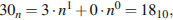

Об экзамене
Первая часть теста включает 13 заданий (А1–А13). К каждому из них даны четыре варианта ответа, из которых нужно выбрать один правильный.
Вторая часть теста состоит из 15 заданий. Ответы к этим заданиям вы должны сформулировать самостоятельно.
Дата сдачи ЕГЭ по информатике в 2015 году - 15 июня.
Разбор заданий
Задание 1
Для кодирования букв О, В, Д, П, А решили использовать двоичное представление чисел 0, 1, 2, 3 и 4 соответственно (с сохранением одного незначащего нуля в случае одноразрядного представления). Если закодировать последовательность букв ВОДОПАД таким способом и результат записать восьмеричным кодом, то получится
- 22162
- 1020342
- 2131453
- 34017
Сначала следует представить данные в условии числа в двоичном коде:
| О | В | Д | П | А |
|---|---|---|---|---|
| 0 | 1 | 2 | 3 | 4 |
| 00 | 01 | 10 | 11 | 100 |
Затем закодировать последовательность букв: ВОДОПАД — 010010001110010. Теперь разобьём это представление на тройки справа налево и переведём полученный набор чисел в десятичный код, затем в восьмеричный (восьмеричное предствление совпадает с десятичным при разбиении тройками)
010 010 001 110 010 — 22162.
Правильный ответ указан под номером 1.
Задание 2
Для таблицы истинности функции F известны значения только некоторых ячеек:
| x1 | x2 | x3 | x4 | x5 | x6 | x7 | F |
|---|---|---|---|---|---|---|---|
| 1 | 0 | 1 | |||||
| 0 | 0 | 1 | |||||
| 0 | 1 | 0 |
Каким выражением может быть F?
- x1 ∧ x2 ∧ x3 ∧ ¬x4 ∧ x5 ∧ x6 ∧ ¬x7
- x1 ∨ ¬x2 ∨ x3 ∨ ¬x4 ∨ ¬x5 ∨ x6 ∨ ¬x7
- ¬x1 ∧ x2 ∧ ¬x3 ∧ x4 ∧ x5 ∧ x6 ∧ x7
- x1 ∨ x2 ∨ ¬ x3 ∨ x4 ∨ x5 ∨ ¬x6 ∨ x7
Проанализируем каждый вариант.
Первый вариант не подходит, поскольку в первой строке переменная ¬x4 = 0, следовательно, F должно обращаться в нуль, что не соответствует таблице истинности.
Второй вариант подходит.
Третий вариант не подходит, поскольку во второй строке переменная x4 = 0, следовательно, F должно обращаться в нуль, что не соответствует таблице истинности.
Четвёртый вариант не подходит, поскольку в третьей строке переменная x4 = 1, следовательно, F должно быть равно 1, что не соответствует таблице истинности.
Ответ: 2.
Задание 3
Таблица 1
| ID | Фамилия_И.О. | Пол |
|---|---|---|
| 1072 | Онищенко А. Б. | М |
| 1028 | Онищенко Б. Ф. | М |
| 1099 | Онищенко И. Б. | М |
| 1178 | Онищенко П. И. | М |
| 1056 | Онищенко Т. И. | М |
| 1065 | Корзун А. И. | Ж |
| 1131 | Корзун А. П. | Ж |
| 1061 | Корзун Л. А. | М |
| 1217 | Корзун П. А. | М |
| 1202 | Зельдович М. А. | Ж |
| 1027 | Лемешко Д. А. | Ж |
| 1040 | Лемешко В. А. | Ж |
| 1046 | Месяц К. Г. | М |
| 1187 | Лукина Р. Г. | Ж |
| 1093 | Фокс П. А. | Ж |
| 1110 | Друк Г. Р. | Ж |
Таблица 2
| ID_Родителя | ID_Ребенка |
|---|---|
| 1027 | 1072 |
| 1027 | 1099 |
| 1028 | 1072 |
| 1028 | 1099 |
| 1072 | 1040 |
| 1072 | 1202 |
| 1072 | 1217 |
| 1099 | 1156 |
| 1099 | 1178 |
| 1110 | 1156 |
| 1110 | 1178 |
| 1131 | 1040 |
| 1131 | 1202 |
| 1131 | 1217 |
| 1187 | 1061 |
| 1187 | 1093 |
В фрагменте базы данных представлены сведения о родственных отношениях. На основании приведённых данных определите фамилию и инициалы родной сестры Лемешко В. А.
- Онищенко А. Б.
- Лемешко Д. А.
- Корзун П. А.
- Зельдович М. А.
- ID Лемешко В. А.: 1040.
- Из таблицы 2 определяем, что ID родителей Лемешко В. А.: 1072, 1131.
- Из таблицы 2 определяем, что ID братьев и сестер Лемешко В. А.: 1202, 1217.
- Из таблицы 1 определяем, что сестра Лемешко В. А. — Зельдович М. А.
То есть правильный ответ указан под номером 4.
Заданиие 4
Для каждого из перечисленных ниже чисел построили двоичную запись. Укажите число, двоичная запись которого содержит ровно две единицы. Если таких чисел несколько, укажите наибольшее из них.
- 8
- 9
- 10
- 11
Представим все числа в двоичной системе счисления:
- 810 = 10002,
- 910 = 10012,
- 1010 = 10102,
- 1110 = 10112.
Из чисел 9 и 10 выбираем число 10, поскольку оно является наибольшим.
Правильный ответ указан под номером 3.
Задание 5
В таблицах приведена протяженность автомагистралей между соседними населенными пунктами. Если пересечение строки и столбца пусто, то соответствующие населенные пункты не являются соседними. Укажите номер таблицы, для которой выполняется условие «Максимальная протяженность маршрута от пункта C до пункта B не больше 6». Протяженность маршрута складывается из протяженности автомагистралей между соответствующими соседними населенными пунктами. При этом через любой насеченный пункт маршрут должен проходить не более одного раза.
1

|
2

|
3

|
4 |
- 1
- 2
- 3
- 4
Заметим, что прямого маршрута из C в B нет ни на одной схеме. Из пункта С можно попасть в пункт B слдующим образом:
Схема 1. C-A-B (протяжённость равна 3 + 4 = 7) или С-D-B (6 + 2 = 8).
Схема 2. C-A-B (5 + 2 = 7).
Схема 3. С-A-D-B (2 + 2 + 2 = 6) или C-D-B (2 + 2 = 4).
Схема 4. С-A-B (2 + 5 = 7) или С-D-B (2 + 5 = 7).
Максимальная протяженность маршрута не превышает 6 только на схеме 3.
Правильный ответ 3.
Задание 6
Исполнитель КВАДРАТОР имеет только две команды, которым присвоены номера:
- возведи в квадрат
- прибавь 1
Выполняя команду номер 1, КВАДРАТОР возводит число на экране в квадрат, а выполняя команду номер 2, прибавляет к этому числу 1. Напишите программу, содержащую не более 4 команд, которая из числа 1 получает число 17. Укажите лишь номера команд.
Например, программа 12122 – это программа:
- возведи в квадрат
- прибавь 1
- возведи в квадрат
- прибавь 1
- прибавь 1
Не любое число является квалратом целого числа, поэтому, если мы пойдём от числа 17 к числу 1, тогда однозначно восстановим программу. Полученные команды будут записываться справа налево.
1) Число 17 не является квадратом, значит, оно получено добавлением единицы к числу 16: 17 = 16 + 1 (команда 2).
Повторим рассуждение для числа 25: 25 = 27 - 2 (команда 2).
2) Т. к. мы хотим получить не более 4 команд, то для получения числа 16 возведём в квадрат 4: 16 = 42 (команда 1).
Повторим рассуждени 2) для числа 4: 4 = 22 (команда 1), а для числа 2 применим рассуждение 1): 2 = 1 + 1 (команда 2).
Тогда окончатльно получаем ответ: 2112.
Задание 7
В ячейке D3 электронной таблицы записана формула =B$2+$B3. Какой вид приобретет формула, после того как ячейку D3 скопируют в ячейку E4?
Примечание: знак $ используется для обозначения абсолютной адресации.
- =C$2+$B4
- =A$2+$B1
- =B$3+$C3
- =B$1+$A3
B$2: меняется столбец и не меняется номер строки.
$B3: столбец не меняется, меняется номер строки.
Номер столбца Е больше номера столбца D на 1. Значит столбец B станет столбцом С.
Номер строки 4 на 1 больше номера строки 3, значит, строка 3 станет строкой 4.
Окончательный вид =С$2+$B4.
Правильный ответ указан под номером 1.
Задание 8
Определите, что будет напечатано в результате работы следующего фрагмента программы:
var k, s: integer;
begin
s:=0;
k:=0;
while k < 30 do begin
k:=k+3;
s:=s+k;
end;
write(s);
end.Цикл while выполняется до тех пор, пока истинно условие k < 30, т. е. переменная k определяет, сколько раз выполнится цикл.
Так как последовательность k представляет собой арифметическую прогрессию, найдем n из неравенства:
k1 = 0, d = 3 (т. к. k := k + 3). Воспользовавшись методом интервалов, находим первое натуральное n, при котором нарушается условие: n = 11.
Значение s есть сумма первых n членов арифметической прогрессии. , b — сумма первых n членов прогрессии, d — разность прогрессии, n — количество членов.
Задание 9
Проводилась одноканальная (моно) звукозапись с частотой дискретизации 16 кГц и 32-битным разрешением. В результате был получен файл размером 20 Мбайт, сжатие данных не производилось. Какая из приведенных ниже величин наиболее близка к времени, в течение которого проводилась запись?
- 1 мин
- 2 мин
- 5 мин
- 10 мин
Так как частота дискретизации 16 кГц, то за одну секунду запоминается 16000 значений сигнала.
Глубина кодирования – 32 бита = 4 байта, размер файла 20 Мб = 20971520 байт. Время записи определится следующим образом: t = 20971520 / (16000 * 4) = 328 секунд или 5,5 минут, что близко к 5 минутам.
Правильный ответ указан под номером 3.
Задание 10
Азбука Морзе позволяет кодировать символы для сообщений по радиосвязи, задавая комбинацию точек и тире. Сколько различных символов (цифр, букв, знаков пунктуации и т. д.) можно закодировать, используя код азбуки Морзе длиной не менее четырёх и не более пяти сигналов (точек и тире)?
Мы имеем алфавит из двух букв: точка и тире. Из двух букв можно составить 24 четырёхбуквенных слова и 25 пятибуквенных слов.
Соответствнно, количество закодированных символов будет равно количеству различных слов, а их 16 + 32 = 48.
Задание 11
Алгоритм вычисления значения функции F(n), где n – натуральное число, задан следующими соотношениями:
F(1) = 1
F(2) = 3
F(n) = F(n–1) * n + F(n–2) * (n – 1) , при n >2
Чему равно значение функции F(5)?
В ответе запишите только натуральное число.
Последовательно находим:
F(3) = F(2) * 3 + F(1) * 2 = 11,
F(4) = F(3) * 4 + F(2) * 3 = 53,
F(5) = F(4) * 5 + F(3) * 4 = 309.
Задание 12
Петя записал IP─адрес школьного сервера на листке бумаги и положил его в карман куртки. Петина мама случайно постирала куртку вместе с запиской. После стирки Петя обнаружил в кармане четыре обрывка с фрагментами IP─адреса. Эти фрагменты обозначены буквами А, Б, В и Г. Восстановите IP─адрес. В ответе укажите последовательность букв, обозначающих фрагменты, в порядке, соответствующем IP─адресу.
IP-адрес представляет собой числа, разъединенные точками, причем числа эти не больше 255.
Посмотрим внимательнее на данные фрагменты: под буквой А мы видим «.64». Число, на которое указывает этот фрагмент, начинается с 64. Так как числа в IP-адресе не могут быть больше 255, мы не можем добавить в конце этого числа еще один разряд, а фрагментов, начинающихся с точки, больше нет, следовательно, этот фрагмент – последний.
Посмотрим на фрагмент под буквой Г. В нем стоит число без точек, значит, это либо последний фрагмент, либо первый. Место последнего фрагмента уже занято, значит фрагмент Г на первом месте.
В конце фрагмента В - число 133, отделенное точкой. Так как в IP-адресе не может быть числа, большего 255, то за фрагментом В должен следовать фрагмент, начинающийся с точки. Значит, фрагмент В идет перед фрагментом А.
Задание 13
Некоторое устройство имеет специальную кнопку включения/выключения, а выбор режима работы осуществляется установкой ручек двух тумблеров, каждая из которых может находиться в одном из пяти положений. Сколько различных режимов работы может иметь устройство? Выключенное состояние режимом работы не считать.
- 10
- 20
- 25
- 32
Представим, что одно положение есть один символ, а т. к. тумблеров 2, то из этих символов надо составить 2-буквенное слово.
Имеется 5 различных положений, значит, 5 символов. Из M = 5 различных символов можно сосатвить Q = MN слов длиной N = 2, т. е. 52 = 25 слов.
Правильный ответ указан под номером 3.
Задание 14
Исполнитель Чертёжник перемещается на координатной плоскости, оставляя след в виде линии. Чертёжник может выполнять команду Сместиться на (a, b) (где a, b — целые числа), перемещающую Чертёжника из точки с координатами (x, у) в точку с координатами (x + а, у + b). Если числа a, b положительные, значение соответствующей координаты увеличивается; если отрицательные, уменьшается.
Например, если Чертёжник находится в точке с координатами (4, 2), то команда Сместиться на (2, −3) переместит Чертёжника в точку (6, −1).
Запись
Повтори k раз
Команда1 Команда2 КомандаЗ
Конец
означает, что последовательность команд Команда1 Команда2 КомандаЗ повторится k раз.
Чертёжнику был дан для исполнения следующий алгоритм:
Повтори 2 раз
Команда1 Сместиться на (3, 2) Сместиться на (2, 1) Конец
Сместиться на (−6, −4)
После выполнения этого алгоритма Чертёжник вернулся в исходную точку. Какую команду надо поставить вместо команды Команда1?
- Сместиться на (−2, −1)
- Сместиться на (1, 1)
- Сместиться на (−4, −2)
- Сместиться на (2, 1)
Команда Повтори 2 раз означает, что команды Сместиться на (3, 2) и Сместиться на (2, 1) выполнятся два раза. В результате Чертёжник переместится на 2·(3 + 2, 2 + 1) = (10, 6). Выполнив последнюю команду Сместиться на (−6, −4), Чертёжник окажется в точке (4, 2).
Чтобы Чертёжник вернулся в исходную точку, необходимо переместить его на (−4, −2). Учитывая, наличие команды Повтори 2 раз, приходим к выводу, что Команда 1 это команда Сместиться на (−2, −1).
Ответ: 1.
Задание 15
На рисунке — схема дорог, связывающих города А, Б, В, Г, Д, Е, Ж, И, К. По каждой дороге можно двигаться только в одном направлении, указанном стрелкой. Сколько существует различных путей из города А в город К?
Начнем считать количество путей с конца маршрута – с города К. NX — количество различных путей из города А в город X, N — общее число путей.
В "К" можно приехать из И, Ж, или Е, поэтому N = NК = NИ + NЖ + NЕ (1)
Аналогично:
NИ = NД;
NЖ = NД + NВ + NЕ;
NЕ = NГ.
Добавим еще вершины:
NД = NБ + NВ = 1 + NВ = 1 + 3 = 4;
NВ = NБ + NА + NГ = 1 + 1 + 1 = 3;
NГ = NА = 1;
NБ = NА = 1.
Преобразуем первые вершины с учетом значений вторых:
NИ = NД = 4;
NЖ = NД + NВ + NЕ = 4 + 3 + 1 = 8;
NЕ = NГ = 1.
Подставим в формулу (1):
N = NК = 4 + 8 + 1 = 13.
Задание 16
В системе счисления с некоторым основанием десятичное число 18 записывается в виде 30. Укажите это основание
Составим уравнение: , где n - основание этой системы счисления. Исходя из уравнения, n = 6.
Задание 17
В таблице приведены запросы к поисковому серверу. Расположите номера запросов в порядке возрастания количества страниц, которые найдет поисковый сервер по каждому запросу. Для обозначения логической операции «ИЛИ» в запросе используется символ |, а для логической операции «И» – &.
- принтеры & сканеры & продажа
- принтеры & продажа
- принтеры | продажа
- принтеры | сканеры | продажа
(вариант 1, рассуждение с использованием свойств операций «И» и «ИЛИ»):
- меньше всего результатов выдаст запрос с наибольшими ограничениями — первый (нужны одновременно принтеры, сканеры и продажа)
- на втором месте – второй запрос (одновременно принтеры и продажа)
- далее – третий запрос (принтеры или продажа)
- четвертый запрос дает наибольшее количество результатов (принтеры или сканеры или продажа)
Задание 18
Для какого имени ложно высказывание: (Первая буква имени гласная → Четвертая буква имени согласная).
- ЕЛЕНА
- ВАДИМ
- АНТОН
- ФЕДОР
Импликация ложна тогда и только тогда, когда посылка истинна, а следствие ложно. В нашем случае — если первая буква имени гласная и четвертая буква гласная. Этому условию удовлетворяет имя Антон.
Задание 19
В программе используется одномерный целочисленный массив A с индексами от 0 до 9. Значения элементов равны 5; 1; 6; 7; 8; 8; 7; 7; 6; 9 соответственно, т.е. A[0] = 5; A[1] = 1 и т.д. Определите значение переменной c после выполнения следующего фрагмента программы, записанного ниже на разных языках программирования.
Basic
c = 0
FOR i = 1 TO 9
IF A(i - 1) >= A(i) THEN
t = A(i)
A(i) = A(i - 1)
A(i - 1) = t
ELSE
c = c + 1
ENDIF
NEXT iPython
c = 0
for i in range(1, 10):
if A[i - 1] >= A[i]:
t = A[i]
A[i] = A[i - 1]
A[i - 1] = t
else:
c = c + 1Pascal
c := 0;
for i := 1 to 9 do
if A[i - 1] >= A[i] then
begin
t := A[i];
A[i] := A[i - 1];
A[i - 1] := t
end
else
c := c + 1;Алгоритмический язык
c := 0
нц для i от 1 до 9
если A[i - 1] >= A[i] то
t := A[i]
A[i] := A[i - 1]
A[i - 1] := t
иначе
c := c + 1
все
кцC
c = 0;
for (i = 1; i <= 9; i++)
if (A[i-1] >= A[i])
{
t = A[i];
A[i] = A[i - 1];
A[i - 1] = t;
}
else
c++;Если верно A[i - 1] >= A[i], то элементы массива меняются местами, если нет, то переменная c увеличивается на единицу. После выполнения цикла массив будет выглядеть так 1; 5; 6; 7; 8; 7; 7; 6; 8; 9, а переменная c будет равна 1 + 1 + 1 + 1 + 1 = 5.
Ответ: 5.
Задание 20
Ниже записана программа. Получив на вход число x , эта программа печатает два числа, L и M. Укажите наибольшее из таких чисел x, при вводе которых алгоритм печатает сначала 3, а потом 7.
var x, L, M: integer;
begin
readln(x);
L:=0; M:=0;
while x > 0 do begin
L:= L + 1;
if x mod 2 = 0 then
M:= M + (x mod 10) div 2;
x:= x div 10;
end;
writeln(L); write(M);
end.Рассмотрим цикл, число шагов которого зависит от изменения переменной x:
while x > 0 do begin
...
x:= x div 10;
end;Т. к. оператор div оставляет только целую часть от деления, то при делении на 10 это равносильно отсечению последней цифры.
Из приведенного цикла видно, что на каждом шаге от десятичной записи x отсекается последняя цифра до тех пор, пока все цифры не будут отсечены, то есть x не станет равно 0; поэтому цикл выполняется столько раз, сколько цифр в десятичной записи введенного числа, при этом число L столько же раз увеличивается на 1. Следовательно, конечное значение L совпадает с числом цифр в x. Для того, чтобы L стало L=3, x должно быть трёхзначным.
Теперь рассмотрим оператор изменения M:
if x mod 2 = 0 then
M:= M + (x mod 10) div 2;
end;Оператор mod оставляет только остаток от деления, при делении на 10 это последняя цифра x.
Условие x mod 2 = 0 означает следующее: чтобы M увеличилось, число x должно быть чётным.
Предположим, исходное x нечётное, тогда на первом шаге M = 0.
Если на втором шаге x также нечётное (вторая цифра исходного числа нечётная), то M = 0, причём каким бы ни было значение x на третьем шаге, мы не сможем получить M = 7, поскольку остаток от деления чётного числа на 10 не превосходит 8, а 8 / 2 = 4, следовательно, вторая цифра исходного x чётная.
Тогда первая цифра может принимать значения 2, 4, 6, 8, но мы ищем наибольшее x, поэтому сделаем первую цифру, равной 9, тогда наше предположение не удовлетворяет условию задачи, и последняя цифра исходного числа обязана быть чётной, т.е. исходное x чётно.
7 = 4 + 3, чему соответствуют цифры 8 и 6. Теперь, располагая цифры по убыванию, находим наибольшее возможное x: x = 986.
Ответ: 986.
Задание 21
Определите, какое число будет напечатано в результате выполнения следующего алгоритма:
Var a,b,t,M,R :integer;
Function F(x:integer):integer;
begin
F:=(x+5)*(x+3);
end;
BEGIN
a:= -5; b:=5;
M:=a; R:=F(a);
for t:=a to b do begin
if (F(t)> R)then begin
M:=t;
R:=F(t);
end;
end;
write(R);
END.- 1. Алгоритм предназначен для поиска наибольшего значения функции F(t) на отрезке от a до b.
- 2. F(x) = (x + 5)(x + 3) Квадратный трехчлен F(t) положительным старшим коэффициентом пересекает ось абсцисс в точках -5 и -3 и, следовательно, возрастает на луче [-3; ∞). Поэтому наибольшее значение функции достигается в точке 5 и равно F(5)=80.
Задание 22
Переменные x и y описаны в программе как целочисленные. Определите значение переменной после выполнения следующего фрагмента программы:
| Бэйсик | x = 432y = x DIV 100 x = ( x MOD 100 ) * 10 x = x + y |
| Паскаль | x : = 432;y : = x div 100; x : = ( x mod 100 ) * 10; x : = x + y; |
| Алгоритмический язык | x : = 432y : = div (x, 100) x : = mod (x, 100 ) * 10 x : = x + y |
Операция div делит число с отбрасыванием остатка. Операция mod оставляет только остаток от деления числа.
x : = 432
y : = x div 100 = 4
x : = ( x mod 100 ) * 10 = (32) *10 = 320
x : = x + y = 320 + 4 = 324
Задание 23
Сколько существует различных наборов значений логических переменных x1, х2, хЗ, х4, х5, хб, х7, х8, которые удовлетворяют всем перечисленным ниже условиям?
(x1 —> х2) —> (хЗ—> х4) = 1
(хЗ —> х4) —> (х5 —> хб) = 1
(х5 —> хб) —> (х7 —> х8) = 1
В ответе не нужно перечислять все различные наборы значений переменных x1, х2, хЗ, х4, х5, хб, х7, х8, при которых выполнена данная система равенств. В качестве ответа Вам нужно указать количество таких наборов.
Сделаем замену переменных:
(x1 —> х2) = y1; (хЗ—> х4) = y2; (х5 —> хб) = y3; (х7 —> х8) = y4.
Тогда можно записать систему в виде одного уравнения:
(y1 —> y2) ∧ (y2 —> y3) ∧ (y3 —> y4) = 1.
Для того, чтобы это равенство было выполнено, ни одна из импликаций не должна быть ложной
Вот все возможные варианты значений "y" (ключевым является тот факт, что переменные y независимы):
| y1 | y2 | y3 | y4 |
| 0 | 0 | 0 | 0 |
| 0 | 0 | 0 | 1 |
| 0 | 0 | 1 | 1 |
| 0 | 1 | 1 | 1 |
| 1 | 1 | 1 | 1 |
Импликация x1 —> х2 дает "0" при одном наборе переменных и "1" при трех наборах переменных.
Поскольку каждая из переменных "y" независима от другой, для каждой строки полученной таблицы перемножаем количество вариантов комбинаций исходных переменных:
| y1 | y2 | y3 | y4 | вариантов |
| 0 | 0 | 0 | 0 | 1·1·1·1 = 1 |
| 0 | 0 | 0 | 1 | 1·1·1·3 = 3 |
| 0 | 0 | 1 | 1 | 1·1·3·3 = 9 |
| 0 | 1 | 1 | 1 | 1·3·3·3 = 27 |
| 1 | 1 | 1 | 1 | 3·3·3·3 = 81 |
Сложим количество вариантов: 1 + 3 + 9 + 27 + 81 = 121.
Задание C1
Требовалось написать программу, которая вводит с клавиатуры координаты точки на плоскости (, — действительные числа) и определяет принадлежность точки заштрихованной области, включая её границы. Программист торопился и написал программу неправильно.
Pascal |
Basic |
C |
Последовательно выполните следующее.
- Перерисуйте и заполните таблицу, которая показывает, как работает программа при аргументах, принадлежащих различным областям (A, B, C, D, E, F, G и H). Точки, лежащие на границах областей, отдельно не рассматривать. В столбцах условий укажите "да", если условие выполнится, "нет", если условие не выполнится, "—" (прочерк), если условие не будет проверяться, "не изв.", если программа ведет себя по-разному для разных значений, принадлежащих данной области. В столбце "Программа выведет" укажите, что программа выведет на экран. Если программа ничего не выводит, напишите "—" (прочерк). Если для разных значений, принадлежащих области, будут выведены разные тексты, напишите "не изв". В последнем столбце укажите "да" или "нет".
- Укажите, как нужно доработать программу, чтобы не было случаев ее неправильной работы. (Это можно сделать несколькими способами, достаточно указать любой способ доработки исходной программы.)
| Область | Условие 1 (x*x+y*y>=4) | Условие 2 (x>= –2) | Условие 3 (y<= –x) | Программа выведет | Область обрабатывается верно |
|---|---|---|---|---|---|
| A | |||||
| В | |||||
| С | |||||
| D | |||||
| Е | |||||
| F | |||||
| G | |||||
| Н |
Содержание верного ответа и указания по оцениванию (допускаются иные формулировки ответа, не искажающие его смысла)
Элементы ответа:
-
Область Условие 1 (x*x+y*y>=4) Условие 2 (x>= –2) Условие 3 (y<= –x) Программа выведет Область обрабатывается верно A да нет — — нет В да нет — — нет С да да нет не принадлежит да D да да да принадлежит да Е нет — — — нет F нет — — — нет G нет — — — нет Н да да да принадлежит нет -
Возможная доработка (Паскаль):
(могут быть и другие способы доработки).if (x*x+y*y>=4) and (x>= –2) and (y<= –x) and (y>=0) then write('принадлежит') else write('не принадлежит')
Задание C2
Опишите на русском языке или на одном из языков программирования алгоритм подсчета суммы всех отрицательных элементов заданного целочисленного массива размером 30 элементов. Если отрицательных элементов нет, сообщите об этом.
const N=30;
var a:array [1..N] of integer;
s, i:integer;
begin
s :=0;
for i:=1 to N do
if a[i] < 0 then
begin
s := s + a[i];
end;
if s=0
then write (‘Отрицательных элементов нет’)
else write (s);
end.Задание C3
Имеются две кучи камней, в одной из которых 1, а в другой — 4 камня. Двум игрокам предлагается игра по следующим правилам. Каждый игрок обеспечивается неограниченным запасом камней. Игроки ходят по очереди. Ход состоит в том, что игрок производит одно из возможных действий: или утраивает число камней в одной из куч, или увеличивает на 3 количество камней в какой-либо куче.
Выигрывает тот игрок, после хода которого, суммарное число камней в двух кучах становится равным 22 или более камней. Кто выиграет при безошибочной игре обоих игроков — игрок, делающий первый ход, или игрок, делающий второй ход? Как должен ходить выигрывающий игрок?
Содержание верного ответа и указания по оцениванию (допускаются иные формулировки ответа, не искажающие его смысла)
Выигрывает первый игрок. У него есть два варианта выигрышного первого хода: или добавить 3 камня в первую кучу, или утроить их количество.
Для доказательства рассмотрим неполное дерево игры, оформленное в виде таблицы, где в каждой ячейке записаны пары чисел, разделённые запятой. Эти числа соответствуют количеству камней на каждом этапе игры в первой и второй кучах соответственно
| 1 ход | 2 ход | 3 ход | |||
|---|---|---|---|---|---|
| Стартовая позиция | I-й игрок (выигрышный ход) | II-й игрок (все варианты) | I-й игрок (выигрышный ход) | ||
| 1,4 | 4,4 | 4,12 | 4,36 | ||
| 4,7 | 4,21 | ||||
| 2 вариант | 6,4 | 18,4 | |||
| 3,7 | 3,21 | ||||
| 3,4 | 9,4 | 27,4 | |||
| 3,12 | 3,36 | ||||
| Таблица содержит все возможные варианты ходов второго игрока. Из неё видно, что при любом ходе второго игрока у первого имеется ход, приводящий к победе. Причём у первого игрока есть два варианта выигрышного хода. Описание любого из них является правильным решением. | |||||
Тест
Первая часть теста включает 13 заданий (А1–А13). К каждому из них даны четыре варианта ответа, из которых нужно выбрать один правильный.
Вторая часть теста состоит из 15 заданий. Ответы к этим заданиям вы должны сформулировать самостоятельно.